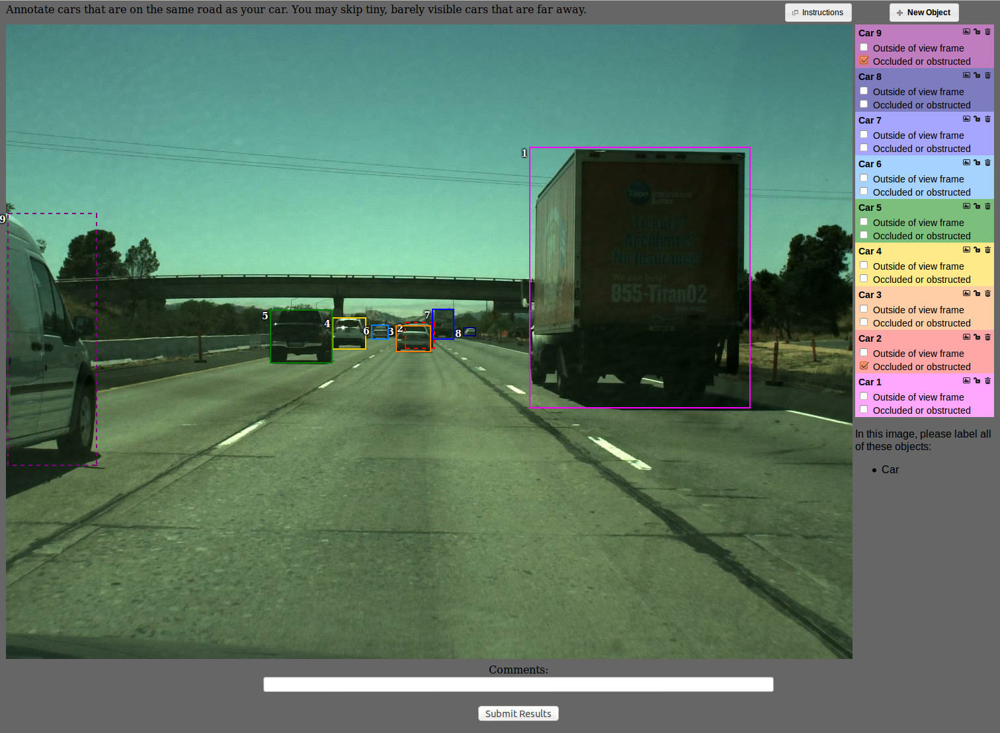

In this task we ask you to annotate vehicles in the images of highway scenes. Each vehicle has to be annotated with a bounding box.
You can use the keyboard shortcuts to speed up the labeling: 'n' - new vehicle, 't' - toggle between occluded/visible state, 'd' - delete vehicle.
Click the New Object button to start annotating a vehicle. Position your cursor over the view screen to click on the corner of a vehicle. Use the cross hairs to line up your click. Click on another corner to finish drawing the box. Resize the box, if necessary, by dragging the edges of the box.
Annotate all vehicles driving in the same direction as your car, regardless if they are on the same road or not. Take a look at this example.
Note: the annotation rectangle should tightly and completely enclose the vehicle you are annotating. Take a look at the examples below, and also at these examples of labeled images.
| Good | Bad - bounding box is too loose | Bad - bounding box is imprecise |
|---|
Note: annotate all types of vehicels including motorcycles, buses and trucks. Take a look at the examples below:
|  |
|